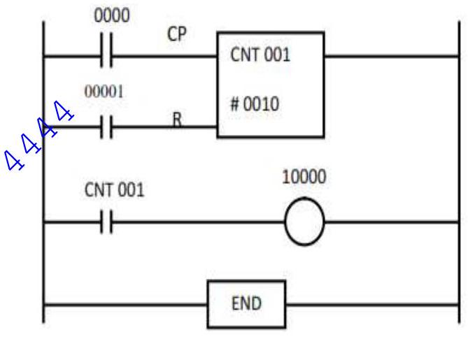

TOPIC 2: PROGRAMMABLE LOGIC CONTROLLER (PLC)
PLC Programming
PLC Programming
Programming devices can be hand-held devices, a desktop console or a computer. Only when the program has been designed on the programming device is ready, it is transferred to the memory unit of the PLC
- Hand-held programming devices - will normally contain enough memory to allow the unit to retain programs while being carried from one place to another.
- Desktop consoles - are likely to have a visual display unit with a full keyboard and screen displays.
- Personal computers - are widely configured as program development work station. A major advantage of using a computer is that the program can be stored on the hand disk or CD and copies easily made.
PLC programming process is to plan activities such as design and write a program to perform the required tasks. The parts that should be there in a PLC program are shown.
| Part | Function |
|---|---|
| Start | Starting an operation |
| Operating Mode | Determining the origin of the device input / output and also the starting point |
| The Reset | Controlling the operation of start / stop it manually or automatically in the program |
| Operations / Ordering Process | Program design as required by the task |
| Signal Output | Trigger output devices. |
| Status Output | Display indicator light or alarm. |
| End | Stop the process./operation |
While ladder logic is the most commonly used PLC programming language, it is not the only one.
IEC 61131-3 (Formerly IEC 1131-3) is the international standard for PLC languages. The following is a list of programming languages specified by this standard.
- Ladder diagram (LD)
- Instruction list (IL)
- Function block diagram (FBD)
- Structured text (ST)
- Sequential function chart (SFC)
1. Ladder diagram language (LD)
It uses a standardized set of ladder programming symbols to implement control functions. Initially programmed with simple contacts that simulated the opening and closing of relays, ladder logic, programming has extended to include such functions as counters, timers, shift registers and mathematical operations.
2. Instruction list (IL)
A low level (assemble like) language that is based on similar instructions list languages found in a wide range of today's PLCs.
Instructions
LD b1
AND b2
ANDN b3
ST b0
3. Structured text (ST)
A high level text language that encourages structured programming. It has a language structure (syntax) that strongly resembles PASCAL and supports a wide range of standard functions and operations. For example
IF (Limit_switch1 AND Workpiece_Present) THEN
Gate1 := Open;
Gate2 := Close;
ELSE
Gate1 := Close;
Gate2 := Open;
END_IF;
4. Function block diagram (FBD)
is a graphical language that allows the user to program elements (e.g., PLC function blocks) in such a way that they appear to be wired together like electrical circuits. It is very useful for expressing the interconnection of control system algorithms and logic.
5. Sequential function chart (SFC)
A method of programming complex control systems at a more highly structure level. It is an overview of the control system, in which the basic building blocks are entire program files.
Ladder diagram Language
A ladder diagram is a symbolic representation of an electrical circuit. Thus the symbols utilized closely resemble schematic symbols for electrical devices.
This language is a symbolic instruction set that is used to create PLC programs. The ladder instruction symbols can be formatted to obtain the desired control logic, which is then entered into memory. Since this type of instruction set consists of contact symbols, it is also referred to as contact symbology
To introduce ladder logic programming, simple switch circuits are converted to relay logic and then to PLC ladder logic.
The industry trend is toward using the IEC 61131-3 standard, though a voluntary standard; individual manufactures here some freedom in the implementation.
Other PLC manufacturers are Allen-Bradley, Control Logix, Modicon, Siemens S7 etc.
Ladder logic symbols
1. The basic ladder logic input symbols are
- Normally open (NO) contact: pass power (ON) if coil driving the contact is ON (closed)
- Normally closed (NC) contact: pass power (ON) if coil driving the contact is off (open)
- Positive transition sensing contact: if condition before the instruction change from OFF to ON, this instruction passes power for only one scan (until rung is scanned again)
 Negative transition sensing contact: if condition before this instruction change from ON to OFF, this instruction passes power for only one scan (until rung is scarred again)
Negative transition sensing contact: if condition before this instruction change from ON to OFF, this instruction passes power for only one scan (until rung is scarred again)
2. The basic ladder logic coil (output) symbols
 Output or coil: if any left-to-right path of instruction passes power, the output is energized. If there is no continuous left-to-right path of instruction passes power, the output is deenergized.
Output or coil: if any left-to-right path of instruction passes power, the output is energized. If there is no continuous left-to-right path of instruction passes power, the output is deenergized.- Negated coil: if any left-to-right path of inputs passes power, the output is de-energized. If there is no continuous left to right path of instructions passing power the output is energized
- Set coil: if any rung bath passes power output is energized and remains energized, even when no rung path pass power
- Reset coil: if any rung path passes power output is de-energized and remains de-energized, even when no rung path passes power.
| Instruction | Symbol | Function |
|---|---|---|
| Examine-ON/Normally Open |  | Tests for an ON condition in a reference address |
| Examine-OFF/Normally Closed |  | Tests for an OFF condition in a reference address |
| Output Coil |  | Turns real or internal outputs ON when logic is 1 |
| NOT Output Coil |  | Turns real or internal outputs OFF when logic is 1 |
| Latch Output Coil |  | Keeps an output ON once it is energized |
| Unlatch Output Coil |  | Resets a latched output |
| One-Shot Output |  | Energizes an output for one scan or less |
| Transitional Contact |  | Closes for one scan when its trigger contact makes a positive transition |
Since the PLC was developed to replace relay logic control system, it was only natural that initial language closely resembles the diagrams used to document the relay logic.
By using this approach, the engineers and technicians using the early PLC did not need retraining to understand the program.
The use combinational logic where the output is purely dependent of the combination of inputs at any instant in time. They use AND, OR, NOT, X-OR to create ladder logic. In all the ladder logic, symbols are used for all inputs, outputs and internal memory.
Vertical lines on the left and right are called the power rails. The contacts are arranged horizontally between the power rails, hence the term rung.
The main functions of a ladder diagram program are to control outputs and perform functional operations based on input conditions. Ladder diagrams use rungs to accomplish this control.
In general, a rung consists of a set of input conditions (represented by contact instructions) and an output instruction at the end of the rung (represented by a coil symbol). The contact instructions for a rung may be referred to as input conditions, rung conditions, or the control logic
Ladder diagram rules
- A ladder diagram is read from left to right and from top to bottom.
- The vertical power lines or rails may be labeled L‚ÇÅ, L‚ÇÇ or X‚ÇÅ, X‚ÇÇ when the voltage potential is derived from a transformer.
- Devices are shown in order of importance whenever possible. Stop button should be given a higher order of importance.
- All contracts associated with a device change state when the device is energized.
- Devices that perform a stop function are normally placed in series on a rung.
- Devices that perform a start function are normally placed in parallel or in a branch configuration.
- Contact associated with relays timers, motor starters always have the same number or letter designation as the device that controls them.
Example 1
Two switches labeled A and B are wired in SERIES controlling a lamp. Implement this function as PLC ladder logic where the two switches are separate inputs.
Solution
| Inputs | Output | |
|---|---|---|
| A | B | X |
| 0 | 0 | 0 |
| 0 | 1 | 0 |
| 1 | 0 | 0 |
| 1 | 1 | 1 |
Boolean Expression: $X=A \cdot B$
The PLC ladder logic notation is shortened from the relay wiring diagram to show only the third line, the relay contacts and coil of the output relay.
Example 2
Two switches labeled A and B are wired in PARALLEL controlling a lamp. implement this function as PLC ladder logic where the two switches are separate inputs.
Solution
| Inputs | Output | |
|---|---|---|
| A | B | X |
| 0 | 0 | 0 |
| 0 | 1 | 1 |
| 1 | 0 | 1 |
| 1 | 1 | 1 |
Boolean Expression: $X=A + B$
Example 3
Draw a ladder diagram for the NOT, NAND, NOR and XOR gate
i) NOT gate
ii) NAND gate
| Inputs | Output | |
|---|---|---|
| A | B | X |
| 0 | 0 | 1 |
| 0 | 1 | 1 |
| 1 | 0 | 1 |
| 1 | 1 | 0 |
(iii), NOR gate
| Inputs | Output | |
|---|---|---|
| A | B | X |
| 0 | 0 | 1 |
| 0 | 1 | 0 |
| 1 | 0 | 0 |
| 1 | 1 | 0 |
iv) XOR gate
| Inputs | Output | |
|---|---|---|
| A | B | X |
| 0 | 0 | 0 |
| 0 | 1 | 1 |
| 1 | 0 | 1 |
| 1 | 1 | 0 |
Questions
- Devise a ladder diagram for a system where there has to be no output when any one of four sensors gives an output, otherwise there is to be an output.
- A signal lamp is required to be switched on if a pump is running and the pressure is satisfactory, or if the lamp test switch is closed. Draw a ladder diagram.
- Consider a valve which is to be operated to lift a load when a pump is running and either the lift switch is operated or a switch operated indicating that the load has not already been lifted and is at the bottom of its lift channel. Devise a ladder diagram.
- An Alarm system is used in conjunction with an automated bottling system in a milk bottling plant. A conveyer belt carries empty bottles that are to be filled with milk. The alarm goes off in any of the conditions occurs.
- Milk tank is empty and bottles are in conveyor belt.
- There are no bottles in the conveyer and there is milk in the tank.
- There is milk in the tank and bottles on the conveyor belt but electric power is off.
- There is no milk in the tank, no bottles on the conveyor belt and electric power is off.
- Write down a Boolean expression for the alarm system.
- Implement this system using a PLC ladder diagram.
- Draw the ladder rungs to represent:
- Two switches are normally open and both have to be closed for a motor to operate.
- Either of two, normally open, switches have to be closed for a coil to be energized and operate an actuator.
- A motor is switched on by pressing a spring-return push button start switch, and the motor remains on until another spring-return push button stop switch is pressed.
- A lamp is to be switched on if there is an input from sensor A or sensor B
- A light is to come on if there is no input to a sensor.
- A solenoid valve is to be activated if sensor A gives an input.
Instruction List
This is a low-level language similar to the machine or assembly language used with microprocessors. This type of language is useful for small applications, as well as applications that require speed optimization of the program or a specific routine in the program
This programming method, which can be considered to be the entering of a ladder program using text, gives programs which consist of a series of instructions, each instruction being on a new line. An instruction consists of an operator followed by one of more operands, i.e. the subjects of the operator. In terms of ladder diagrams an operator may be regarded as a ladder element.
Each instruction may either use or change the value stored in a memory register.
There are a lot of instructions used to develop the PLC program. Each instruction has a respective function. For this, mnemonic codes are used, each code corresponding to an operator/ladder element. The codes used differ to some extent from manufacturer to manufacturer, though a standard IEC 1131-3 has been proposed and is being widely adopted.
Instruction code mnemonics
| IEC 1131-3 Operators | Mitsubishi | OMRON | Siemens/ Telemecanique | Operation | Ladder diagram |
|---|---|---|---|---|---|
| LD | LD | LD | A | Load operand into result register | Start a rung with open contacts |
| LDN | LDI | LD NOT | AN | Load negative operand into result register | Start a rung with closed contacts |
| AND | AND | AND | A | Boolean AND | A series element with open contacts |
| ANDN | ANI | AND NOT | AN | Boolean AND with negative operand | A series element with closed contacts |
| OR | OR | OR | O | Boolean OR | A parallel element with open contacts |
| ORN | ORI | OR NOT | ON | Boolean OR with negative operand | A parallel element with closed contacts |
| ST | OUT | OUT | = | Store result register into operand | An output |
1. LD - LOAD Instruction
These instructions are use to start a line of the program. It is used in the first contacts in the normally open condition (NO). The Execution Conditions of the instruction on the right will be ON when internal relay (IR) 00000 is ON.
| Address | Instruction | Operand/Data |
|---|---|---|
| 00000 | LD | 00000 |
| 00001 | instruction |
2. LD NOT - LOAD NOT Instruction
These instructions are use to start a line of the program. It is used in the first contacts in the normally closed condition (NC). The Execution Conditions of the instruction on the right will be ON when IR 00000 is OFF.
11. OR LD and AND LD
When both logic block instruction is to be used in Ladder Diagram, a program must be written from the bottom up to merge logic blocks. For example, ladder diagram below: Logic block of instruction for the last two blocks (blocks b1 and b2 blocks) are written first and then followed by the first logic block instruction (block a).
| Address | Instruction | Operand/Data |
|---|---|---|
| 00000 | LD NOT | 00000 |
| 00001 | AND | 00001 |
| 00002 | LD | 00002 |
| 00003 | AND NOT | 00003 |
| 00004 | LD NOT | 00004 |
| 00005 | AND | 00005 |
| 00006 | OR LD | |
| 00007 | AND LD | |
| 00008 | OUT | 10000 |
| 00009 | FUN 01 |
Block b1
Block b2 + Block b1 = Block b
Block b. Block a
Examples
1. Signal Lamp Control
A signal lamp is required to be switched on if a pump is running and the pressure is satisfactory, or if the lamp test switch is closed.
LD X400
AND X401
LD X402
ORB
OUT Y430
END
2. Valve Control
For a valve which is to be operated to lift a load when a pump is running and either the lift switch is operated or a switch operated indicating that the load has not already been lifted and is at the bottom of its lift channel, Figure shows the ladder program and the related instruction list.
LD X400
OR X402
AND X401
OUT Y430
END
3. Sensor Logic
For a system where there has to be no output when any one of four sensors gives an output, otherwise there is to be an output, Figure shows the ladder program and the instruction list.
LDI X400
ANI X401
ANI X402
ANI X403
OUT Y430
END
Sequential control
This is where the output is dependent not only on the actual inputs but on the sequence of the previous inputs and outputs (memorizing events).
Sequential problems have long been solved using conventional logic gates as building blocks, but using certain techniques to express and identify the sequence logic equations that control the system outputs. Advanced PLC instructions such as shift registers, sequencers, master control relays, timers etc are provided to simplify the design and implementation of sequence systems.
Internal Relay
In PLCs there are elements that are used to hold data, i.e. bits, and behave like relays, being able to be switched on or off and switch other devices on or off. Hence the term internal relay.
Such internal relays do not exist as real-world switching devices but are merely bits in the storage memory that behave in the same way as relays.
For programming, they can be treated in the same way as an external relay output and input. Thus inputs to external switches can be used to give an output from an internal relay.
This then results in the internal relay contacts being used, in conjunction with other external input switches to give an output, e.g. activate a motor.
For the first rung: when input 1 or input 3 is closed and input 2 closed, then internal relay IR 1 is activated. This results in the contacts IR 1 closing. If input 4 is then activated, there is an output from output 1.
Such a task might be involved in the automatic lifting of a barrier when someone approaches from either side. Input 1 and input 3 are inputs from photoelectric sensors that detect the presence of a person, approaching or leaving from either side of the barrier, input 1 being activated from one side of it and input 3 from the other. Input 2 is an enabling switch to enable the system to be closed down.
Thus when input 1 or input 3, and input 2, are activated, there is an output from the internal relay 1. This will close the internal relay contacts. If input 4, perhaps a limit switch, detects that the barrier is closed then it is activated and closes. The result is then an output from Out 1, a motor which lifts the barrier.
If the limit switch detects that the barrier is already open, the person having passed through it, then it opens and so output 1 is no longer energized and a counterweight might then close the barrier.
The internal relay has enabled two parts of the program to be linked, one part being the detection of the presence of a person and the second part the detection of whether the barrier is already up or down
SET and RESET
Another function which is often available is the ability to Set and reset an internal relay. The SET instruction causes the relay to self-hold, i.e. latch. It then remains in that condition until the RESET instruction is received. The term flip-flop is often used.
The SET coil is switched on when power is supplied to it and remains set until it is RESET. The RESET coil is reset to the off state when power is supplied to it and remains off until it is SET.
SET and RESET instruction will change the status of bit operations only when the implementation is ON. In the OFF condition, the instructions will not change the bit operation status.
| Address | Instruction | Operand/Data |
|---|---|---|
| 00000 | LD | 00000 |
| 00001 | SET | 10000 |
| 00002 | LD | 00001 |
| 00003 | RESET | 10000 |
When the input instruction LD 00000 is ON, SET instruction command to ON and always ON regardless of whether the input instruction LD 00000 is ON or OFF.
When the inputs instruction LD 00001 is ON, RESET instruction is ON and SET instruction will be off.
Example
An example of the basic elements of a simple program for use with a fire alarm system is shown. Fire sensors provide inputs to a SET-RESET function block so that if one of the sensors is activated the alarm is set and remains set until it is cleared by being reset. When set it sets off the alarm.
Timers
In many control tasks there is a need to control time. Timers are devices that count increments of time. PLCs thus have timers as built-in devices. Timers count fractions of seconds or seconds using the internal CPU clock.
The way the timers work varies from one type of PLC to another. A common approach is to consider timers to behave like relays with coils which when energized result in the closure or opening of contacts after some preset time. The timer is thus treated as an output for a rung with control being exercised over pairs of contacts elsewhere.
The timer compares its current time with the preset time. The output of the timer is a logic 0 as long as the current time is less than the preset time. When the current time is greater than the preset time the timer output is a logic 1.
TIMER (TIM) is the instructions that require numbers TIM (N) and the set value (SV). The range of numbers TIM is from 000 to 511, while the range of set values for the TIM is 0000 to 9999
The numbers TIM can not be used twice. When a number has been used as definer, such as number 000 for instructions on TIM, the number can not be used again.
When a number is defined as the number of TIM, it can be used as often as required as an operator operand in other instructions from the command TIMER.
Example 1
Timer is enabled / activated when the execution condition is ON and will be reset to set value (SV) when the execution condition is OFF.
The set value (SV) of TIMER is the BCD between #0000 to #9999. For example if TIMER be set 0-5 seconds, then the set value is # 0050
| Address | Instruction | Operand/Data |
|---|---|---|
| 00000 | LD | 00000 |
| 00001 | TIM | 000 |
| # 0050 | ||
| 00002 | LD | TIM 000 |
| 00003 | OUT | 10000 |
| 00004 | FUN 01 |
Operation condition: When the input (LD 00000) is ON, the timer contact will be activated after 5 seconds. Next the output (OUT 10000) will be ON.
Example 2
Operating condition: When the input (LD 00000) ON, the timer (TIM 000) will be activated after 5 seconds and the output (OUT 10000) will be ON. While the output (OUT 10001) will be ON as soon as the supply is supplied and will be OFF after 5 seconds. Timer will continue to be active as long as the input 00000 state is ON .
Example 3
| Address | Instruction | Operand/Data |
|---|---|---|
| 00000 | LD | 00000 |
| 00001 | TIM | 000 |
| # 0050 | ||
| 00002 | LD | TIM 000 |
| 00003 | AND NOT | TIM 001 |
| 00004 | OUT | 10000 |
| 00005 | LD | 10000 |
| 00006 | TIM | 001 |
| #0030 | ||
| 00007 | OUT | 10001 |
| 00008 | FUN 01 |
When the input (LD 00000) ON, the timer (TIM 000) will be activated after 5 seconds. Next the output (OUT 10000) will be ON. After 3 seconds the output (OUT 10000) ON, the timer (TIM 001) will be activated the next output (OUT 10000) will be OFF and the timer (TIM 001) will be OFF. When the timer TM001 OFF, contact TIM 001 (NC) will be ON and the output (OUT 10000) is ON state. Output (OUT 10000) will continue ON and OFF until the input (LD 00000) in the OFF state.
Question
Two motors (M1 and M2) are to be controlled as follows:
- When the run switch is operated both motor must run
- After 4 min motor 1 must stop
- Motor 2 continues running for another 2 min and stops
- At this point a lamp is switched on
- After a further 90 sec , the lamp goes off and the cycle restarts
- If a stop switch is operated at any time, the system will continue to the end of the cycle and then stop. Produce the PLC program
Counters
Counters used in PLCs serve the same function as mechanical counters. Counters compare an accumulated value to a preset value to control circuit functions.
Counter is used to count and store the number of occurrence of an input signal. Control applications that commonly use counters include the following:
- Count to a preset value and cause an event to occor
- Cause an event to occur until the count reaches a preset value
Counters increment/decrement one count each time the input transitions from off (logic 0) to on (logic 1).
Counter (CNT) is the instructions that require numbers TIM/CNT (N) and the set values (SV).
The range of numbers CNT is from 000 to 511, while the range of set values for the CNT is 0000 to 9999
When a number is defined as the number of CNT, it can be used as often as required as operator operand in other instructions from the command COUNTER.
The counters are reset when a RESET instruction is executed
| Instruction | Symbol | Function |
|---|---|---|
| Up Counter |  | Increases the accumulated register value every time a referenced event occurs |
| Down Counter | Decreases the accumulated register value every time a referenced event occurs | |
| Counter Reset |  | Resets the accumulated value of an up or down counter |
Example 1
Counter set to count 10. When the input (LD 00,000) is the pulse of ten, a counter will be activated and thus the output (OUT 10000) will be ON. When reset (LD 00,001) ON, a counter will be in original condition

| Address | Instruction | Operand/Data |
|---|---|---|
| 00000 | LD | 00000 |
| 00001 | LD | 00001 |
| 00002 | CNT | 000 |
| #0010 | ||
| 00003 | LD | CNT 000 |
| 00004 | OUT | 10000 |
| 00005 | FUN 01 |
Example 2

Counter set to count 5. When the input (LD 00,000) is the pulse of five, a counter will be activated and thus the output (OUT 10000) will be ON. When the output (OUT 10000) ON, TIM 001 will be activated after 3 seconds and then the output (OUT 10 001) will be ON. Both the output (OUT 10000) and (OUT 10 001) will always be ON until reset (LD 00001) in the ON state. Reset will return the counter to its original condition.
Questions
- Components pass along a chute and interrupt a light switch which goes low (off) each time it is interrupted. Every time 6 components have been counted, an eject operation is used to remove the batch and the then it all starts again. Produce a ladder logic diagram to do this operation. The counter is designated C460
- Design a ladder program for an industrial control system that:
- Count ten objects passing along a conveyor belt;
- Closes a deflecting gate when the number has been deflected into a carton
- Allows a time of 5 seconds between the tenth object counted and closing of the deflector.
- A controlled car park has 4 spaces in the packing lot. Cars are detected and allowed to enter into the parking space if available. If NO space a "Full" indicator lamp should be lit, otherwise individual indicator lamps should light to show the available parking space. Design a PLC ladder diagram of the car parking system; include comments on every rung.
- With the aid of a ladder program and a process control figure, explain how a converter can be used in a machine to direct 6 products to a packaging box and 12 products to another box simultaneously.